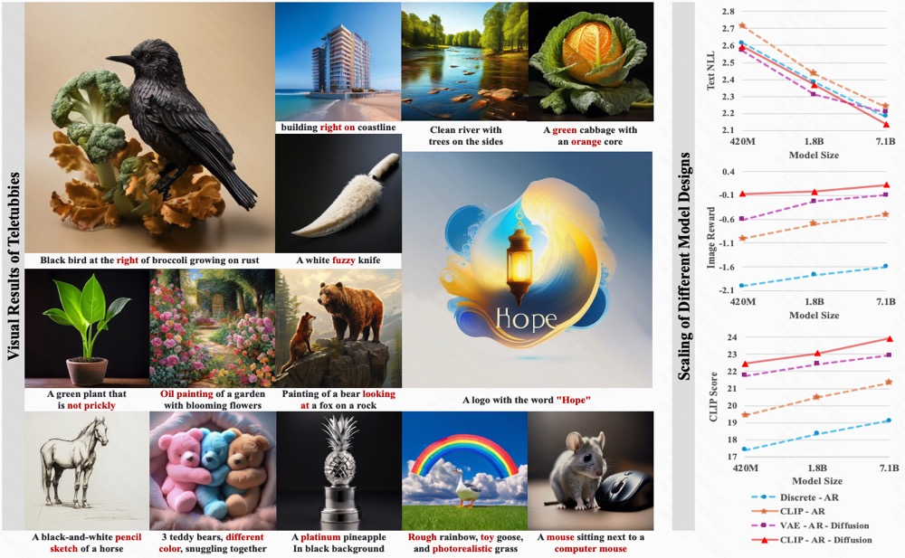
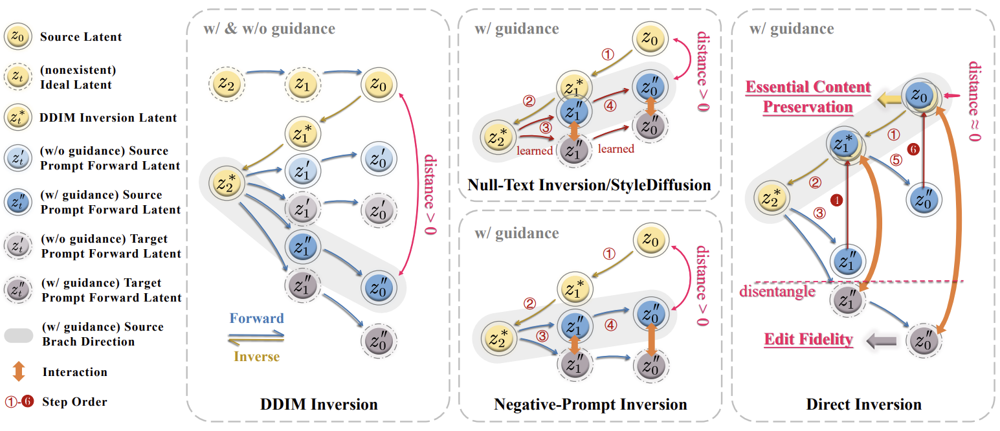
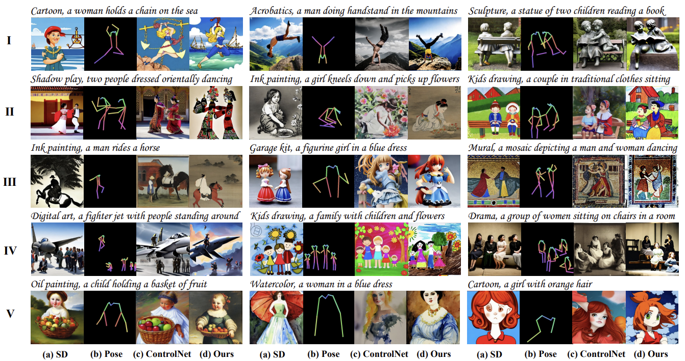
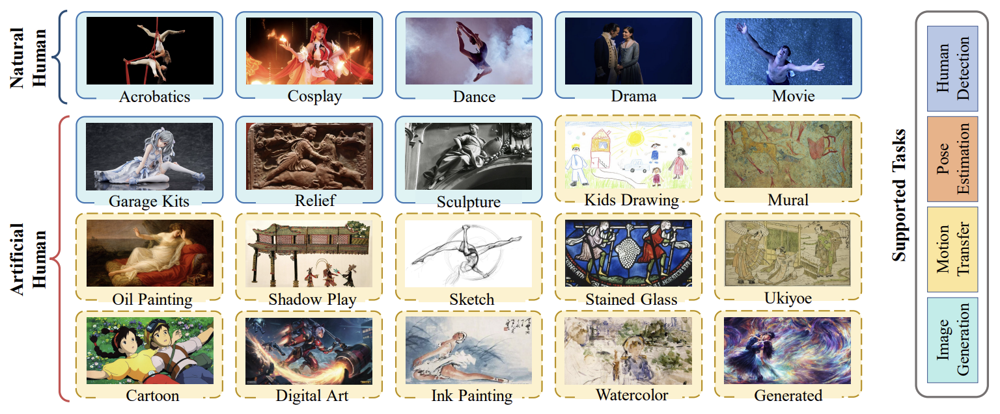
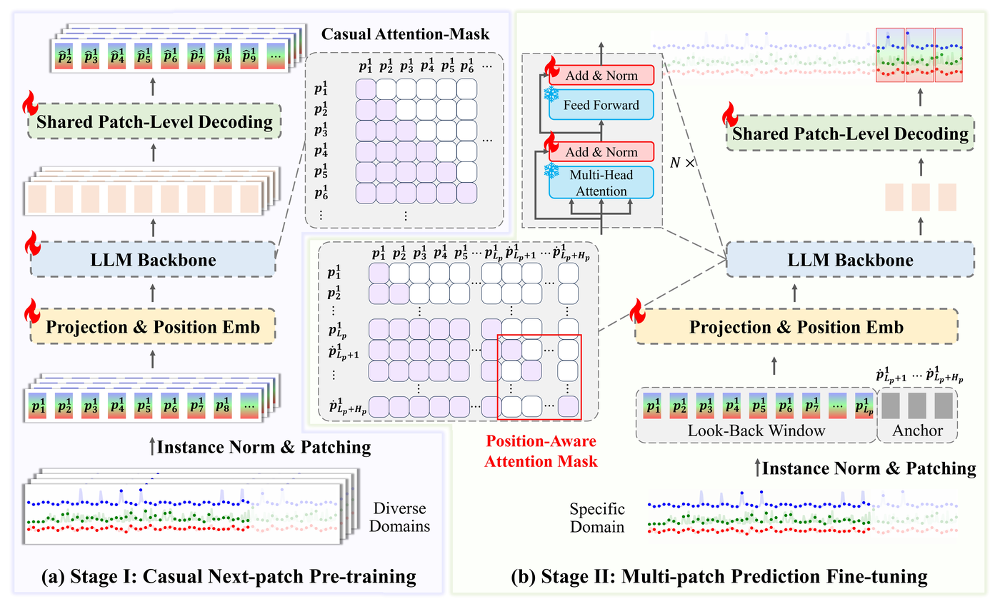

|
Computer Vision Researcher |
|
Biography
Hi, I'm Yuxiang Zhao (赵煜翔). I'm a computer vision researcher at Alibaba Group, exploring the boundaries of human-like multimodal understanding and generation in a scalable way. Previously, I spent three wonderful years at Tencent Hunyuan&AI Lab and International Digital Economy Academy (IDEA), leading human-centric perception and generation research team. I obtained my Ph.D. from the Department of Computer Science and Engineering, the Chinese University of Hong Kong, supervised by Prof. Qiang Xu. I was a visiting scholar in the Robotics Institute, Carnegie Mellon University. My research aims to build multi-modal, human-like intelligent agents in a scalable way, especially by training Large Motion Models to capture, understand, interact with, and generate the motion of humans, animals, and the world. Specifically,
News
- [09/2025] We release a unified image/video editing/generation framework, EditVerse.
- [06/2025] FullDiT (a multi-task video generation model based on full-attention) is accepted to ICCV 2025, see you in Hawai'i!
- [05/2025] We are hosting the CVPR 2025 Workshop on Efficient and On-Device Generation (EDGE).
- [04/2025] Start an internship in Adobe Research with Soo Ye Kim and Zhe Lin.
- [04/2025] VideoPainter and Cobra are accepted to SIGGRAPH 2025.
Selected Publications
* equal contribution

|
EditVerse: Unifying Image and Video Editing and Generation with In-Context Learning
Under Review
|

|
FullDiT: Multi-Task Video Generative Foundation Model with Full Attention
International Conference on Computer Vision (ICCV), 2025
|
|  |
Teletubbies: On Design Choices of Scaling Autoregressive Models for Image Generation
|

|
MiraData: A Large-Scale Video Dataset with Long Durations and Structured Captions
Conference on Neural Information Processing Systems (NeurIPS), 2024
|

|
BrushNet : A Plug-and-Play Image Inpainting Model with Decomposed Dual-Branch Diffusion
European Conference on Computer Vision (ECCV), 2024
|
|  |
Direct Inversion: Boosting Diffusion-based Editing with 3 Lines of Code
International Conference on Learning Representations (ICLR), 2024
|
|  |
HumanSD: A Native Skeleton-Guided Diffusion Model for Human Image Generation
IEEE/CVF International Conference on Computer Vision (ICCV), 2023 (Oral, Top 1.8%)
|
|  |
Human-Art: A Versatile Human-Centric Dataset Bridging Natural and Artificial Scenes
Proceedings of the IEEE/CVF Conference on Computer Vision and Pattern Recognition (CVPR), 2023
|
|  |
Multi-Patch Prediction: Adapting LLMs for Time Series Representation Learning
International Conference on Machine Learning (ICML), 2024
|


Working Experience

|
Research Intern, Adobe Research
Topic: Multimodal Video Generation
Supervised by: Soo Ye Kim and Zhe Lin
|
|
Research Intern, Kuaishou Kling
Topic: Multimodal Video Generation
Supervised by: Xintao Wang
|
|

|
Research Intern, Meta GenAI
Topic: Multimodal Image Generation
Supervised by: Kevin Chih-Yao Ma
|

|
Research Intern, Tencent ARC Laboratory
Topic: Image Inpainting, Video Generation
Supervised by: Xintao Wang, Ying Shan
|

|
Research Intern, International Digital Economy Academy (IDEA) CVR Laboratory
Topic: Human-Centric Image Generation
Supervised by: Ailing Zeng, Lei Zhang
|

|
Research Intern, X-Lab, SenseTime Research
Topic: Human Pose Estimation
Supervised by: Lei Yang
|